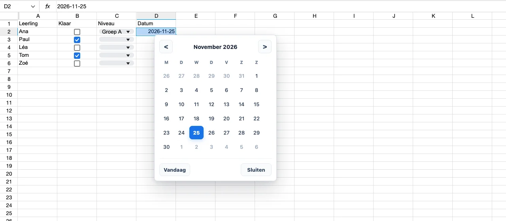

Selectievakjes, lijsten en kalender

Selectievakjes
De cellen selecteren, Invoegen › Selectievakje. Een klik vinkt aan of uit; de cel is TRUE of FALSE.
=ALS(B2; "klaar"; "te doen")
=SOMPRODUCT(B2:B6; C2:C6)
=SOMPRODUCT(B2:B6; B2:B6)De tweede formule telt de waarden van kolom C op waarvan het vakje is aangevinkt; de derde telt de aangevinkte vakjes.
Keuzelijsten
De cellen selecteren, Invoegen › Vervolgkeuzelijst….
| Bron | Inhoud |
|---|---|
| Waarden | de opties, één per veld; Optie toevoegen; zonder komma |
| Uit een bereik | een bereik waarvan de cellen de opties zijn: Blad2!$A$1:$A$10 |
Een bereik zonder $ verschuift van cel tot cel, zoals een doorgevoerde formule. Veranderen de cellen ervan, dan volgen de opties.
De cel toont een pijl; een klik opent de opties. Een andere waarde dan die van de lijst wordt niet aanvaard.
Kalender
Dubbelklikken op een datumcel opent een kalender: een dag kiezen, van maand wisselen met < en >, Vandaag voor de datum van vandaag. Hij opent op elke cel met een datumnotatie, ook een lege, behalve als ze een formule bevat of vergrendeld is.
Voor een datumkolom die met de kalender ingevuld wordt: ze selecteren en de notatie Datum geven.
Weghalen
Delete haalt het vakje of de lijst uit de cel weg, met de waarde.
Vakjes en lijsten worden in het Excel-bestand opgeslagen; de vakjes zijn er selectievakjes van Excel.